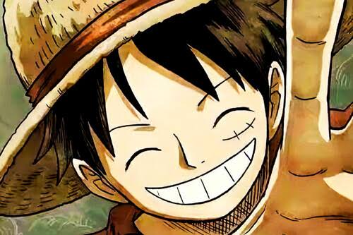

GTA 6 no se olvida de 'One Piece' tras 13 años y Eiichiro Oda presenta la transformación definitiva de Luffy

| Gear 2 | Gear 3 | Gear 4 | Gear 5 |
|---|---|---|---|
| Acelera el flujo sanguíneo usando su cuerpo de goma | Infla sus huesos con aire para lograr golpes gigantescos | Combina goma y Haki de armadura inflando su musculatura | Despertar de la fruta Hito Hito no Mi |